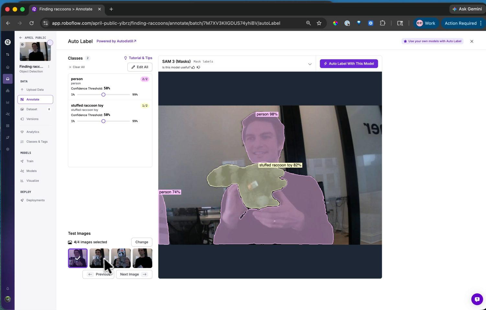

13.7.3. A képek címkézése¶
Egy objektumészlelő címkézett példákból tanul: minden betanítási képhez kell egy doboz minden célobjektum köré, az osztályával felcímkézve. Több száz képkocka kézi címkézése lassú, ezért a Roboflow automatizálja azt.
13.7.3.1. Auto Label¶
Az Annotate oldalon az Auto Label egy szöveges utasítással vezérelt alapmodellt működtet: szavakkal írod le az egyes osztályokat, és az megtalálja és dobozba foglalja ezeket az objektumokat az egész kötegen. Adj hozzá egy osztályt minden észlelni kívánt dologhoz – stuffed raccoon toy, valamint person, hogy megtanítsd a modellnek, mit hagyjon figyelmen kívül –, tekintsd meg az eredmény előnézetét néhány tesztképen, és állítsd be minden osztály konfidenciaküszöbét addig, amíg a dobozok oda nem kerülnek, ahova kell.
{kind=link}

Az Auto Label szöveges utasításokból találja meg az osztályokat és címkézi fel a köteget – tekintsd meg az előnézetet és hangold a küszöbértékeket, mielőtt minden képen lefuttatnád.¶
Futtasd le a kötegen, majd ellenőrizd: nézd át a felcímkézett képeket, javítsd ki azt a néhányat, amelyet a modell elrontott, és töröld azokat a dobozokat, amelyeket kitalált. Az Auto Label végzi a munka nagy részét; az ellenőrző menet pedig elkapja a hibáit.
13.7.3.2. Hozzáadás az adathalmazhoz¶
A felcímkézett képek egy train / valid / test felosztással kerülnek be az adathalmazba. A felosztás az, ahogy a modell pontosságát mérik: a betanítási képeken tanul, a validációs halmazhoz igazodik, és a teszt képeken értékelik, amelyeket a betanítás során soha nem látott. Az alapértelmezett felosztás megfelelő – fogadd el, és az adathalmaz készen áll a betanításra.